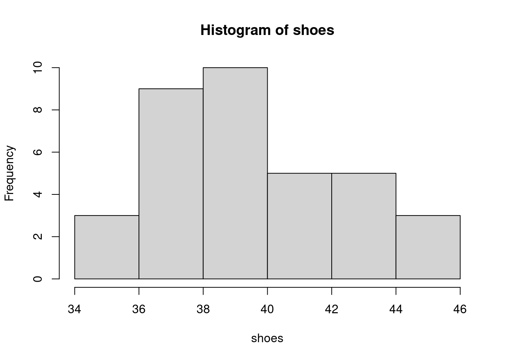

3 Введение в R
3.1 Общее
R — скриптовый язык. Важно помнить, что код в нем выполняется построчно. Многие функции в нем векторизованы, то есть выполняются ко всему списку объектов, что даются ему на вход. Это вы потом увидите на примерах. В R есть множество пакетов (помните, мы вводили install.packages() при подготовке к школе?), в которых реализованы наиболее эффективные алгоритмы работы с данными, именно поэтому он так удобен для анализа.
3.2 Типы данных
С некоторыми типами данных мы уже познакомились выше. Все они, кроме фактора, более-менее стандартны для всех языков программирования.
3.2.1 Целое число — integer
Например, в R можно что-нибудь посчитать как на калькуляторе.
6/3## [1] 2Чтобы определить тип данных есть команда typeof():
b <- 6 ** 2
typeof(b)## [1] "double"Ой, у нас вышло, что эта переменная не целочисленная, а double — число с плавающей запятой. Хранение в памяти такого числа требует больше ресурсов. Можно перевести переменную в integer:
b <- 6 ** 2
b <- as.integer(b)
typeof(b)## [1] "integer"3.2.2 Число с плавающей запятой — double
Этот формат — для всех целочисленных и дробных значений.
2.5 + 3.3## [1] 5.8Результат деления всегда будет числом с плавающей точкой, даже если результат целочисленный:
c <- b / 2
paste(c)## [1] "18"typeof(c)## [1] "double"Основные операторы для арифметических действий:
+ — сложить
- — вычесть
* — умножить
** или ^ — возвести в степень
%% — получить остаток от деления
%/% — получить целочисленную часть от деления
sqrt() — извлечь квадратный корень
round() — округлить
3.2.3 Комплексные числа — complex
Кто знает, тот поймет.
3.2.4 Символьный тип данных (строки) — character
s1 <- "Я строка"
s2 <- 'И я строка'
s1## [1] "Я строка"s2## [1] "И я строка"В кавычках '' или "" заключены символьные данные. Следите за тем, чтобы не пропустить открывающие/закрывающие кавычки.
s3 <- "Экранирование \"лишних\" кавычек"
paste(s3)## [1] "Экранирование \"лишних\" кавычек"R (как и другие языки) может читать текст вместе со специальными управляющими символами (такими, например, являются кавычки ' и " или бэкслэш \), а может читать просто как текст. Специальные символы можно экранировать, добавив перед ними бэкслэш.
Выполнять мат. операции с символьными значениями нельзя.
'a' * 3## Error in "a" * 3: non-numeric argument to binary operatorДля соединения символьных и числовых данных часто необходимо превратить числовое значение в символьное.
У тебя есть переменная: age - с твоим возрастом. Попробуй вывести на экран с помощью функции paste() фразу “Мой возраст:” и свой возраст. Не забудь превратить число возраста в строку с помощью функции as.character(). В paste просто перечисляй строки через запятую.
3.2.5 Фактор — factor
Ну а что же такое факторы
# ://////////++++++++++++++++++++++++++++++++++//////:::::::::::::/:::::
# //////////+++++++++++++++++++++++++++++++ossoo++/////++syyo+//:////:::
# ///////////++++++++++++++++++++++++++++//:/+shhhhhhddddddddhyo//////::
# ////////////++++/++++++++////+++ooo+++syyyysssyyyhdmmmdddddhhy+//////:
# ////////////////+osyhddho:::osshddddhhysyhhyyyyyhysosydmmmmddhy//////:
# //////////////+syhdmmmdh+/oyyhdddhhhhhdddhso+++syhhyo+/+shdmdddo/////:
# ///////+oyhhhhdmmmmmmhs//shhdhssssysooooo++/+ss//+oooso/::/+yddh/////:
# ///osyhmmmmmmmmmmmmho::/osyhyyssoossyyssssyhhy/:/shhhyysso+/:/shs///::
# /+hmddmmmmmmmmmmmds:-::++oys+//sys+//oyooshyyho+oydmdddddddyo+:+hho/::
# +smdmmmmmmmmmmmmh+---::++//+oydmmddsoohsoyhyyhyyyhdmdhhydddddyo/sso/::
# +ohmmmmmmmmmmmds:---::///shdmmdmmmddhhhssyyhhhhyyyyhdy+hdhddddy+/:::--
# ++odmmmmmmmmmd+------::ohddddddhhdmddhhhdddddddddhsssssydhddddh+/:----
# +++odmmmmmmmd+------:/ohhddddddhyyddhhdmdhdhhhdhdddhyssyhdddddho+:---.
# ++++ymmmmmmmh:-.--::+shhddmydhddhhysyhmdhhdmhhhddddddhhyyyddddyoo:....
# ++++odmmmmmdy-----:/shhhhddddddhhssshdmddhhdhdyhhhdddddddhhddhs++/....
# ++++++ydddddy----::+yddhhhhhhyyhsoshmddddhhhdhhhddddddddddddhhyo+/:...
# /++++++oshhhs-----:/shhyyhdddddyosdmddddhhhhhddhyyhhhddddddddhyys/:-..
# ++++++++++/o+--.-----/+sssyyyhyoydmmddddhhhhhhdmdddddddddddddddhyo::-.
# +++++++++/--:-..-+/..-:+osssyyssdmmdddddhhyhdddhyyhdddddddddddddhs//--
# /++++++++/---...-/:.-:+o++/+ssshmdddddddhhhddhhdddddddmdddddddddho//:-
# +++++++++/:::-..-:---/ooo+/+ysydmddddddddddmddddddddddmmmddddddds+/:::
# ++++++++:-...-....--:+yysoshhhdmmmmmddddddmdddddddddddmmmmmmmdddoo/:::
# +++++++/-..`..-...-:/+syyhdddmmddddddddddmmdddmmmmmdddmmmmmmmmdyo/::::
# ++++++/:-.....--.---:/oyhddddddhhdddddmmmmmddmmmmmmdddmmmmmdddyo//:::/
# /+++++/--.--...------:/ohddmmmdddddmmmmmmdmmmmmmmmmmddmmmmmddys+///:/:
# //////:....--...-:::::/+shhdddmmmmmmmmdmmmmmmmmmmmdmmmmmmmdhyo//:/::/:
# /////:.......--..-:::::/+shddmddmmmmdmmmmmmmmmmmmmmmmmmddhhso////:///:
# :///:.``.....---..-::::/+osyhdmmmmmmmmmmmmmmmmddmmmmmdyyyyo+////::/:::
# ::::-.```...--::-.------::/+syhdddddddmdddhyyyyhddmmhso+++/:://:::::::
# ::::.``````..-:::--..----::/+oossssyhddyo+:://oyhhys+:::/::::/::::::--
# :::-.```````....-:--...------:::::/oso/-----::/++//:--::::://::::---..
# :::-`````````....----....--....-------......--::::::/::::://::::--....
# -::-.````.......--:---......-......------:::/+++++//////:::::---......Фактор был придуман для облегчения работы с качественными переменными, он может быть представлен как строка, и как число. Например, возьмем последовательность букв алфавита
f <- factor(LETTERS)На них можно посмотреть как на строковые данные:
as.character(f)## [1] "A" "B" "C" "D" "E" "F" "G" "H" "I" "J" "K" "L" "M" "N" "O" "P" "Q" "R" "S"
## [20] "T" "U" "V" "W" "X" "Y" "Z"И как на числовые:
as.numeric(f)## [1] 1 2 3 4 5 6 7 8 9 10 11 12 13 14 15 16 17 18 19 20 21 22 23 24 25
## [26] 26Если нам нужно каждому варианту ответа присвоить код (номер), то это удобно сделать с помощью фактора:
dogs <- c("мопс", "пудель", "овчарка", "йорк", "мопс", "мопс")
f_dogs <- factor(dogs)
f_dogs## [1] мопс пудель овчарка йорк мопс мопс
## Levels: йорк мопс овчарка пудельas.numeric(f_dogs)## [1] 2 4 3 1 2 2У факторов есть уровни и они сортируются по алфавиту
levels(f_dogs)## [1] "йорк" "мопс" "овчарка" "пудель"str(f_dogs)## Factor w/ 4 levels "йорк","мопс",..: 2 4 3 1 2 2Допустим, мы хотим отсортировать уровни по-своему
f_dogs2 <- factor(dogs,
levels=c("овчарка", "мопс", "йорк", "пудель"))
f_dogs2## [1] мопс пудель овчарка йорк мопс мопс
## Levels: овчарка мопс йорк пудельstr(f_dogs2)## Factor w/ 4 levels "овчарка","мопс",..: 2 4 1 3 2 2str(f_dogs)## Factor w/ 4 levels "йорк","мопс",..: 2 4 3 1 2 2Изменение уровней фактора
levels(f_dogs) <- c("йорк", "шарпей", "овчарка", "пудель") #меняем мопсов на шарпеев
f_dogs## [1] шарпей пудель овчарка йорк шарпей шарпей
## Levels: йорк шарпей овчарка пудель3.2.6 Упорядоченный фактор — ordered factor
Допустим мы хотим знать, какая собака больше (чуть более реальный пример: размер одежды S-M-L и т.д. как фактор)
f_dogs[1] < f_dogs[2]## Warning in Ops.factor(f_dogs[1], f_dogs[2]): '<' not meaningful for factors## [1] NAo_f_dogs <- factor(f_dogs, ordered = TRUE, levels = c("йорк", "пудель", "шарпей", "овчарка"))
o_f_dogs## [1] шарпей пудель овчарка йорк шарпей шарпей
## Levels: йорк < пудель < шарпей < овчаркаo_f_dogs[1] < o_f_dogs[2]## [1] FALSEПри неупорядоченных факторах мы получили NA, при упорядочивании мы получили возможность сравнивать разные уровни.
В нашей таблице у нас есть возможность представить строковые значения как факторы с помощью флажка stringsAsFactors = TRUE (по умолчанию он равен FALSE)
data <- read.table(file = "about_us_eng.csv", sep=",", header=TRUE, stringsAsFactors = TRUE)data$beard## [1] no no no no no no yes no no no no no no no no no no no no
## [20] yes no no no no no no no no no no no no no yes no
## Levels: no yes3.2.7 Логические — boolean
Логические данные имеют всего два вида: TRUE либо FALSE. Они часто возникают, когда мы хотим проверить какое-то условие:
a == b## [1] FALSEОператоры сравнения будут те же, что ф вормальной логике:
== — равно
!= — не равно
> , < — больше, меньше
>= — больше или равно
<= — меньше или равно
Для объединения условий также есть специальные символы:
&& или & — и, ответ правда если оба условия правда
||' или|--- или, ответ правда если хотя бы одно условие правда!` — не, отрицание выражения, смена правды на ложь и наоборот
У тебя есть две переменных: d <- 24, e <- 41. Проверьте условие: остаток от деление нацело этих двух переменных больше 0.
Кстати, остаток от деления на 2 помогает проверить число на четное или нечетное.
С логическими данными можно выполнять мат. операции, тогда TRUE — это 1, FALSE — это 0:
c + TRUE## [1] 193.2.8 Даты.
В R есть отдельные функции для облегчения работы с датами. Например, можно посчитать сколько дней прошло между двумя заданными датами.
Как же их задавать?
date1 <- as.Date("2019-07-24")
date1## [1] "2019-07-24"Можно писать другие форматы, но к ним нужны пояснения
date2 <- as.Date("07/24/2019", format = "%m/%d/%Y")
date2## [1] "2019-07-24"date1## [1] "2019-07-24"date3 <- as.Date("24.07.2019", format = "%d.%m.%Y")
date3## [1] "2019-07-24"date1## [1] "2019-07-24"date4 <- as.Date("07/24/19", format = "%m/%d/%y")
date4## [1] "2019-07-24"date1## [1] "2019-07-24"Вот так можно посмотреть список всех этих сокращений от даты и от времени (например, большая M — это минуты)
`?`(strptime)Мы можем узнать системное время (определяется по твоему компу) и сравнить его с переменной
Sys.Date()## [1] "2021-08-02"date1<Sys.Date()## [1] TRUE3.3 Структуры данных
3.3.1 Вектор
Это самая базовая, простая структура. Вектор — это последовательность элементов одного и того же типа. Вектор можно создать командой конкатенации с():
a<-c(1,2,3,3,2,1)
a## [1] 1 2 3 3 2 1С числовыми векторами можно осуществлять самые разные преобразования. Благодаря векторизованности языка R, нам нет необходимости писать цикл, который будет применять операции к каждому елементу вектора. R это сделает сам.
- арифметические операции
a*2## [1] 2 4 6 6 4 2a*c(1,2,3,4)## Warning in a * c(1, 2, 3, 4): longer object length is not a multiple of shorter
## object length## [1] 1 4 9 12 2 2a-5## [1] -4 -3 -2 -2 -3 -4a^2## [1] 1 4 9 9 4 1a/2## [1] 0.5 1.0 1.5 1.5 1.0 0.5Как видите, чтобы перемножить вектора, они должны быть одинаковой длины:
a*c(1,2,3,4,5,6)## [1] 1 4 9 12 10 6- операции сравнения (важно!
=— оператор присваивания! для сравнения используйте==)
a<=1## [1] TRUE FALSE FALSE FALSE FALSE TRUEa!=1## [1] FALSE TRUE TRUE TRUE TRUE FALSEa==1## [1] TRUE FALSE FALSE FALSE FALSE TRUEВ результате мы получаем вектор логических значений. Запомним, это пригодится нам далее.
Вспомним, что в логических переменных TRUE — это 1, FALSE — это 0
tf = c(TRUE,TRUE,FALSE,TRUE)
tf == 1## [1] TRUE TRUE FALSE TRUEtf == 0## [1] FALSE FALSE TRUE FALSEsum(tf)## [1] 3sum(tf == 0)## [1] 1Наш датасет, хранящийся в data, имеет 15 столбиков. Каждый столбик — это вектор. Мы можем извлекать их оттуда через знак $:
data$height## [1] 165 180 161 164 180 170 170 173 163 168 165 164 166 NA 173 173 183 170 185
## [20] 169 185 172 158 185 168 175 162 182 164 167 175 167 168 179 172NA — это пропущенное значение:
data$height[1:10]==164## [1] FALSE FALSE FALSE TRUE FALSE FALSE FALSE FALSE FALSE FALSEdata$height[1:10] — это выбор первых десяти значений из вектора, которые мы протом проверяем на равенство 164
Мы можем посчитать частоту каждого значения с помощью функции table()
table(data$height)##
## 158 161 162 163 164 165 166 167 168 169 170 172 173 175 179 180 182 183 185
## 1 1 1 1 3 2 1 2 3 1 3 2 3 2 1 2 1 1 3Вспомним, что мы можем совершать арифметические действия с логическими переменными и посчитаем, сколько человек выше 175см:
sum(c(TRUE,TRUE,FALSE,TRUE))## [1] 3sum(data$height>175)## [1] NAОпа, посчитать не получилось. Это потому что каждый элемент вектора нужно сравнить с 175, а для пропущенного значения это невозможно. давайте просто не будем его учитывать:
sum(data$height>175, na.rm=TRUE)## [1] 8Посчитаем среднее количество глаз на каждого из нас:
mean(data$eye_number)## [1] 5.057143Все понятно, мы — ангелы

Гистограмма распределения размеров обуви и самый большой размер:
shoes<-data$shoe_size
hist(shoes)
max(shoes)## [1] 45Вектор может быть именованным и к каждому элементу тогда можно обратиться по имени:
b<-c("e"=1,"f"=2,"g"=3)
b## e f g
## 1 2 3b['f']## f
## 2names(b)## [1] "e" "f" "g"А если имени нет?

Тогда можно по номеру в последовательности:
b[2]## f
## 2Или сразу по вектору номеров! NB! В R нумерация элементов начинается с 1, но не в каждом языке программирования так.
b[c(1,3)]## e g
## 1 3Или по логическому вектору отфильтровать другой вектор:
b[c(TRUE,FALSE,TRUE)]## e g
## 1 3Мы можем выбрать не одну, а несколько колонок из таблицы с помощью вектора:
data[c("eye_color","gorgeous")]3.3.2 Матрицы
Матрица - такая структура данных, где есть столбики и строки. Вектор может быть превращён в матрицу. Для этого надо сказать, сколько в нём строчек или столбиков. Пока что они нам не пригодятся.
3.3.3 Списки
Список (list) - структура данных, которая может включать в себя набор из данных разного формата, например, вектор и строку, число и матрицу и пр.
u0 <- list('A', 1)
u0## [[1]]
## [1] "A"
##
## [[2]]
## [1] 1Мы можем посмотреть структуру объекта:
u <- list("A", 1, list ("A", T))
str(u)## List of 3
## $ : chr "A"
## $ : num 1
## $ :List of 2
## ..$ : chr "A"
## ..$ : logi TRUEПредставим, что список — это мешочек. Функция unlist() вытаскивает предметы из мешочка и просто выставляет их на стол

uu <- c(list("a",5),list(list(5)))
str(uu)## List of 3
## $ : chr "a"
## $ : num 5
## $ :List of 1
## ..$ : num 5unlist(u)## [1] "A" "1" "A" "TRUE"Можно превратить список в другие структуры данных, например, таблицу или матрицу.
u <- list("a"=c(1,2),"b"=c(3,4))
str(u)## List of 2
## $ a: num [1:2] 1 2
## $ b: num [1:2] 3 4u2 <- as.data.frame(u)
u3 <- as.matrix(u2)
u4 <- as.matrix(u)Найдите эти переменные в глобальном окружении. Выглядят они похоже, но описания у них в глобальном окружении разные, как и принципы работы с ними.
Элементам списка также можно давать имена, а не обращаться к ним по номерам:
u <- list('a', matrix(c(1, 2)))
names(u) <- c('meow', 'meow_num')
u## $meow
## [1] "a"
##
## $meow_num
## [,1]
## [1,] 1
## [2,] 2Выведем второй элемент списка и посмотрим, какой тип данных он имеет:
u[2]## $meow_num
## [,1]
## [1,] 1
## [2,] 2class(u[2])## [1] "list"Второй элемент этого списка был превращен из матрицы с одной колонкой в вертикальный список с именем meow_num, состоящий из одного элемента - матрицы.
Чтобы нам добраться до самого второго элемента именнованного списка - матрицы - нужно использовать двойные скобки [[x]]. Это особенность синтаксиса.
u[[2]]## [,1]
## [1,] 1
## [2,] 2class(u[[2]])## [1] "matrix" "array"Либо обратиться не по индексу, а по имени:
u$meow## [1] "a"
3.3.4 Дата фреймы
Это наши любимые таблицы. В каждом столбце находятся элементы одного типа. В переменной data находится наш датафрейм. Как и с векторами, есть три базовых способа фильтрации датафреймов:
- с помощью вектора с адресами (номерами строк)
data10_1<-data[1:10,]- с помощью вектора с именами
data10_1<-data[c(1:5,7:10),c("soft_drink","hot_drink")]- С помощью логического вектора (
rep()- функция, генерирующая повторяющиеся значения)
data10_1<-data[c(rep(TRUE,10),rep(FALSE,25)),]Подробнее о логической фильтрации будет в следующем уроке.
3.3.5 Другие
Есть структуры данных более высокого уровня: функции, классы (например, класс numeric), объекты. С частью из них мы познакомимся далее.
3.4 Функции и простые действия с данными
Для начала мы можем узнать тип данных, из которых состоит вектор
ch <- c('apple', 'pear', 'banana', 'orange')
ch## [1] "apple" "pear" "banana" "orange"typeof(ch)## [1] "character"Сколько уникальных элементов содержится в векторе?
ch2 <- c('apple', 'pear', 'banana', 'orange', 'apple', 'apple')
unique(ch2)## [1] "apple" "pear" "banana" "orange"sort(ch2) #сортировка объектов## [1] "apple" "apple" "apple" "banana" "orange" "pear"Фильтруем все, что по алфавиту идет раньше ‘ba’. При этом считается, что ‘ba..’ идет позже просто ‘ba’
ch[ch>"ba"]## [1] "pear" "banana" "orange"Сколько символов в элементах вектора?
length(ch)## [1] 4nchar(ch)## [1] 5 4 6 6Поиск элементов
grep('b', ch, value=TRUE) #дает само значение## [1] "banana"grep('b', ch, value=FALSE) #дает порядковый номер элемента## [1] 3ch[grep('b', ch, value=FALSE)] #определяет значение по порядковому номеру элемента## [1] "banana"Bывод элемента по номеру
ch2[1]## [1] "apple"Исключение элемента по номеру
ch2[-4]## [1] "apple" "pear" "banana" "apple" "apple"ch[-1]## [1] "pear" "banana" "orange"ch2[-c(1, 2)]## [1] "banana" "orange" "apple" "apple"Разбиение по разделителю (пробел)
text <- 'Ну-ка фрукты встаньте в ряд'
strsplit(text, ' ')## [[1]]
## [1] "Ну-ка" "фрукты" "встаньте" "в" "ряд"a <- strsplit(text, ' ')
typeof(a)## [1] "list"typeof(a[1])## [1] "list"Строка с пропусками вида character и digit
sprintf("%s отправляется в %d часов", "Электричка", 12)## [1] "Электричка отправляется в 12 часов"sprintf("%s отправляется в %d часов", rep("Электричка", 2), c(12, 13))## [1] "Электричка отправляется в 12 часов" "Электричка отправляется в 13 часов"Вытащить кусок строки
substr("Я маленькая лошадка", start=3, stop=12) ## [1] "маленькая "Заменить кусок внутри строки
sub("маленькая", "большая", "Я маленькая лошадка") ## [1] "Я большая лошадка"sub("маленькая", "большая", "Я маленькая маленькая лошадка") #заменяет только первое появление подстроки## [1] "Я большая маленькая лошадка"gsub("маленькая", "большая", "Я маленькая маленькая лошадка")## [1] "Я большая большая лошадка"Отбор элементов по номеру позиции (индекс) и по его значению
d <- c(1,2,6,4)
d>2## [1] FALSE FALSE TRUE TRUEd[d>2] #сами элементы## [1] 6 4which(d>2) #номера их позиций## [1] 3 4Можно проверить, принадлежат ли элементы вектора определенному типу данных
int_num<-c(1,2,3,4000)
is.integer(int_num)## [1] FALSEtypeof(int_num)## [1] "double"К целочисленному выражению элементы вектора можно привести несколькими способами:
int_num<-as.integer(c(1,2,3,4000))
int_num<-c(1L,2L,3L,4000L) #сохраняет как целые
as.integer(214748364.7)## [1] 214748364as.integer(2147483648) #слишком большое число, не может хранить## Warning: NAs introduced by coercion to integer range## [1] NAas.integer(-2147483647)## [1] -2147483647as.integer(-2147483648)## Warning: NAs introduced by coercion to integer range## [1] NAДля больших чисел мы вынуждены использовать формат с плавающей точкой, он может хранить больше информации
as.double("10000998843483274893274892374238947273")## [1] 1.0001e+37Включение scientific notation
options(scipen=999)
2^64## [1] 1844674407370955161690071992547409923## [1] 90071992547409920options(scipen=0)
2^64## [1] 1.844674e+1990071992547409923## [1] 9.007199e+16Numeric - общее название для числовых данных, включает в себя и double, и integer. Подробнее о форматах можно посмотреть в справке ?double и ?integer.
numeric_num<-c(1,2,2.5)
is.integer(numeric_num)## [1] FALSEis.integer(int_num)## [1] TRUEis.numeric(int_num)## [1] TRUEis.numeric(numeric_num)## [1] TRUEstr(numeric_num)## num [1:3] 1 2 2.5is.double(numeric_num)## [1] TRUEtypeof(numeric_num)## [1] "double"Объединение векторов с разнымм типами значений
n <- c(1,2,3)
s <- c('a', 'b', 'c')
c(n,s)## [1] "1" "2" "3" "a" "b" "c"Как видите, при объединении числовой формат был переделан в строковый. Как мы узнали ранее, разные форматы можно хранить только в списках и таблицах.
3.5 Задания для тренировки
- Соедини значение 1 и TRUE в вектор. Что получилось?
-
У тебя есть вектор
1, 2, 3, 4, 5, 6, 7, 8, 9, 10. Создай из него матрицу с заполнением по строкам. Выбери первый столбец. Помни, что при фильтрации в форматеvec[x, y],x— это строка,y— это столбец.
-
Список со вложенными списками
subjects <- list(list(‘Masha’, 18, list(39, 40)), list(‘Nastya’, 22, 41), list(‘Mitya’, 25, 46)). Выведи второй элемент третьего элемента первого списка. Что это за число? Поэкспериментируй. Не забудь про двойные кавычки[[]].
-
Определи среднее, сумму, максимальное и минимальное значение в векторе
data$hair_length. Нарисуй гистограмму.
-
Выведи вектор, получившийся в результате проверки каждого элемента из
data$hair_lengthна четность/нечетность (используй остаток от целочисленного деления)
-
Из нашей таблицы data выбери элемент, находящийся на 18 строке в 6 столбце и выведи на экран с помощью функции
paste()